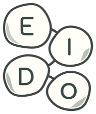

eido.Eido is a thinking canvas — a quiet place to lay ideas out as cards, connect them, and think with AI beside you. This page is unlisted: it was shared with you on purpose. Thanks for trying an early build.
Download
Mac
Needs macOS 13 or newer on an Apple Silicon Mac (M1 or later). Intel Macs aren't supported.
Download for MacIf a button takes you to a list of files instead of downloading, grab the file ending in .dmg (Mac) or .exe (Windows).
First open — for each downloaded build
Friends Alpha is unsigned on both platforms. Your computer therefore shows a warning the first time you open each downloaded build. The steps below let you choose to run that exact download; a corrected build may ask again after you download it.
- Open the downloaded file and drag Eido into Applications.
- Double-click Eido. macOS will say it can't verify the app — click Done (not Move to Trash).
- Open System Settings, then Privacy & Security.
- Scroll down to the Security section. Next to the message about Eido, click Open Anyway.
- Confirm — your Mac may ask for your password or fingerprint. Eido opens. A future downloaded build may ask again.
- Run the downloaded Eido installer.
- A blue screen appears: "Windows protected your PC." Click More info.
- Click Run anyway.
- Follow the installer. A future downloaded build may show the SmartScreen warning again.
Your data stays yours
- Everything you write lives on your computer. There's no account, no login, and no cloud copy.
- No telemetry. Eido doesn't report how you use it — to anyone, ever.
- You choose when Eido reaches an AI provider. Those requests go only to the provider you set up yourself. Installer downloads happen in your browser from this page, not in the app. Eido otherwise works fully offline.
Staying up to date
On both Mac and Windows, come back to this page, download the newest installer, and run it yourself. Reinstalling the app keeps your local Profile in place.
The existing updater path remains in Eido, but this Alpha publishes no updater manifest/checksum assets. Without those feed inputs the updater remains dormant and cannot discover, download, or launch a new installer. SHA256SUMS.txt is release-integrity evidence, not an updater input.
The initial 0.1.0-alpha.7 release includes both Mac and Windows. A correction may cover only the affected platform under a higher version with an explicit release record. Published installer bytes are never replaced.